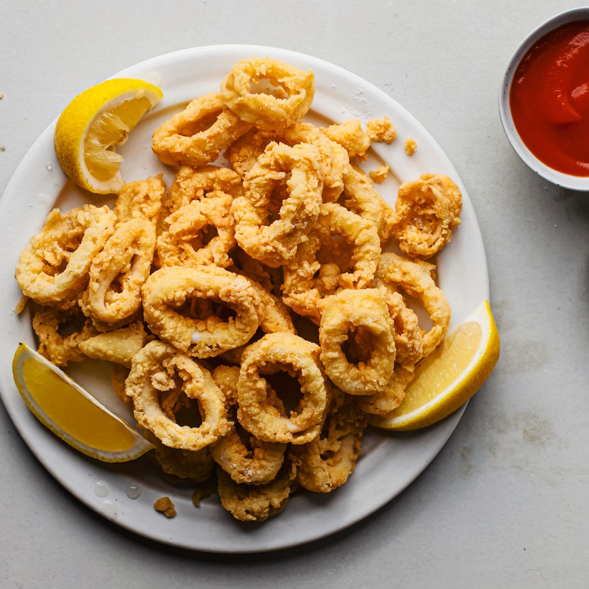

Fried Calamari

Description
Calamari are small squid, and when they are served battered and fried,
they are one of the most classic Italian summer seafood dishes. These are
crisp golden rings of tender squid that people eagerly squeeze lemon
wedges over and then quickly eat them while they're still hot—and before
everyone else gobbles them up.
Calamari are usually served quite simply with just lemon wedges and a
light sprinkling of sea salt. However, you can also serve them with a
dipping sauce, such as cocktail sauce, garlicky aioli, a simple tomato
sauce, or spicy ketchup.
Ingredients
- 1 pound (450 grams) squid rings, squid bodies sliced into rings
- 3 cups peanut oil, or amount needed for frying
- 2/3 cup unbleached all-purpose flour
- 4 medium eggs
- 4 tablespoons semolina flour
- Fine sea salt, to taste
- 1 lemon, cut into wedges, for garnish
Steps
-
Rinse the squid pieces in running water and pat completely dry with
paper towels.
-
In a large high-walled, heavy-bottomed pot over medium-high, heat
several inches of oil to 350 F, or until a small cube of bread dropped
into the oil browns, about 30 seconds.
-
Place the all-purpose flour in a shallow bowl. Lightly beat the eggs in
a large mixing bowl. Place the semolina in a small bowl.
-
Dredge the calamari rings in the flour, shaking them to remove excess.
Dip the floured rings in the egg and then in the semolina.
-
Fry dredged calamari in several batches to avoid overcrowding, until
crisp and lightly golden, about 1 to 2 minutes.
-
Using a fine-mesh spider or a slotted spoon, transfer the fried calamari
to a paper-towel-lined plate to drain.
-
Season to taste with salt and serve immediately with lemon wedges.
Enjoy.
- Serve hot, with lemon wedges on the side.